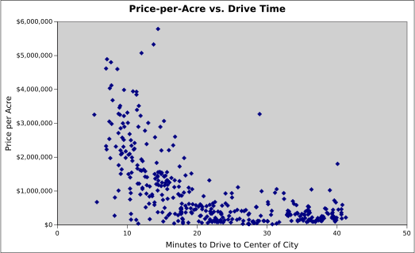
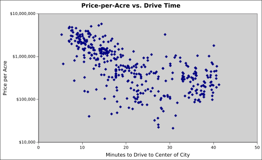
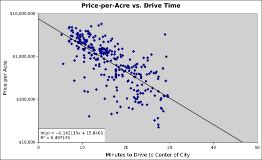
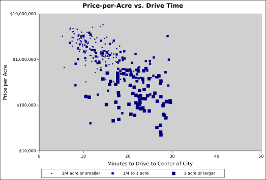
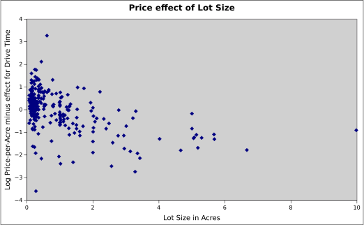
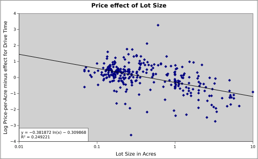
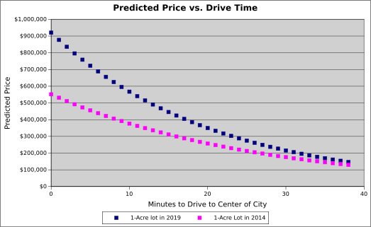
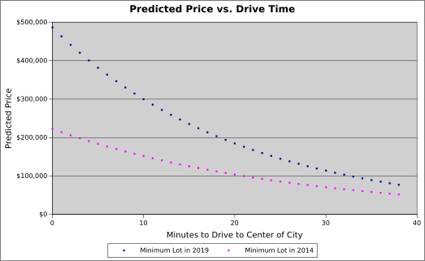

The prices for houses in Austin, Texas are extremely high. I wanted to understand why. It took me a while to understand the data and measure exactly how screwed up Austin's property market is. This document describes what I did, so others can repeat it with other city's data.
I have a Masters in Economics from University of Texas at Austin. I am on the Board of AURA, a YIMBY group in Austin.
TL;DR: The price to build a house hasn't gone up much, but the price of land has gone up dramatically, some more than doubled. Downtown property has gone up in price, probably due to worsening traffic. The price of smaller lots has gone up more than large lots, probably due to Austin's zoning rules. I recommend removing Austin's minimum lot size, making it easier to split lots, and changing single-family zones to multi-family zones.
Obviously, to analyze the high price of housing, I needed price data. Glaeser and Gyourko worked with the price of homes and the land they sit on. Unfortunately, Texas doesn't require real estate sales data to be made public. I can get a lot of data on the asking price for housing, but I found that hard to work with. The asking price is not the sale price. Moreover, buildings have a lot of parameters that affect price: square footage, quality of build, age, number of rooms, parking, etc..
Glaeser and Gyourko found that the price of building a house in a growing city doesn't change much, so I decided to focus on the price of land. An empty lot still has a lot of parameters (location, square footage, zoning, school district, soil quality, etc.) but it is fewer.
An "angel" delivered me data on about 500 empty lots sold in Austin from Feb. 2019 to Feb. 2020, which I'll refer to as "2019" data. They also gave me data for another roughly 500 lots sold in 2014. The data included the address, acreage, and actual sale price.
I'm a big fan of making everything public about research, but I cannot do it for the data in this case. Sorry.
The data is neither a complete nor random sample of data. It is not every lot sold in Austin during the time period. The incomes of buyers may not be evenly distributed. My analysis focuses on individual lots and ignores ones that are part of large developments. Lastly, and possibly most importantly, the best land may already have houses on it — these empty lots might be lower quality than the average lot. Despite all those caveats, I think the trends seen in the data are useful, as well as the comparison of 2014 to 2019.
When it comes to location, a major component of the land's value is the travel time to the center of the city. Whether for work, shopping, or entertainment, it is better to be near the center of the city. Since 90% of trips in Austin are by car, I decided to use Google Maps to measure the driving time to the center of Austin, 6th Street and Congress Ave.
I used Google's Geocode and Distance Matrix API's to look up driving distance and driving time from the center of Austin to each lot's address. I ran the script at night. I would prefer rush-hour drive times, but I couldn't get rush-hour drive times for 2014, so I used non-rush-hour drive times for both.
The script that I used to get the drive times, modified to hide the data source, is here.
If you have any experience with data, you know it is never perfect. I dropped lots with 0 or less acres. I only used data from individual lots, not ones adjacent to each other. I removed two records with addresses that were unknown to Google's API.
The data that I used may include addresses misinterpreted by Google's API.
After cleaning, there were about 400 lots for each year.
Initially, I tried to regress the price for each lot based only on its size. Many economists studying housing, like Gyourko and Glaeser, believe that the land isn't getting expensive, it's the right to build a house that is getting expensive. With my regression, I expected to see a constant price-per-sqft with a large jump when the lot was bigger than the the minimum lot allowed by Austin's law (5750 sqft.). The jump would be the price of the right to build a house on the land.
I didn't get clear numbers with that approach. In response, I started to play with the 2019 data. One economics paper suggested that price-per-acre was based on distance to the center of the city. I retrieved drive times from Google and when I graphed price-per-acre vs. drive time, I got this:
There is clearly a trend, with some outliers. The expensive outliers are lake-front property. The cheap outliers are near creeks and probably inside a flood zone.
The paper had actually suggested the proper target of the regression is the logarithm of price-per-acre. Given what I know about the nature of prices, that made sense. Here is the same graph, with price-per-acre on a log scale.
It took me a while to figure this out, but I think the best way to view the data is with two cities. Austin's effect is on the left. The other "city" is Lake Travis. (The actual lake; not the high school.) As you get close to the lake (the 40 minute drive time data), the price-per-acre increases. Thus, the land in between (about 30 minute drive time) seems to have the lowest prices.
If we pull out just the data with a drive time less than 30 minutes, we see a clear trend.
Given the previous graphs, I knew that distance to downtown accounted for a major portion of the price. But my goal was still to figure out if the size of a lot affected the price. Here is the previous plot, except showing small, medium, and larger lot sizes.
The smaller lots are closer to the city center. That makes sense, since land is more expensive there. What is interesting is the trend in prices for small lots vs. large lots.

The trend line for smaller lots is above that for larger lots. That means smaller lots are more expensive per acre than larger lots. That's exactly what other economists had predicted. But to see the relationship of size-to-price, let's compare the size to the price-per-acre after adjusting for drive time.
That isn't very helpful. So, let's put lot size on a log-scale.
As you can see from the trend line, it seems to fit. So, it looks appropriate to regress the log price-per-acre on the drive time and the log lot size.
The regression was coded up in python. The important line is:
fit = ols('LogPricePerAcres ~ TimeSecs + LogAcres + 1', data=df).fit()
Where "TimeSecs" is the drive time in seconds.
The script is here.
The output of the script is:
Filename, Param, Value
Sale2019dist.csv, Intercept, 5.964031884391964
Sale2019dist.csv, TimeSecs, -0.0003500648590715251
Sale2019dist.csv, LogAcres, -0.6847304872426945
Sale2019dist.csv, EdgeOfCity, 2280
"Intercept" is the log price of a 1-acre lot at the city center. The script uses log base 10, so that makes the price $920,517.
"TimeSecs" is the coefficient for drive time in seconds. The factor means that prices are cut in half for every 14 minutes of driving. So, a 1-acre lot that is 28 minutes from the city center would be $230,129. (That is, 1/4th the price at the city center.)
"LogAcres" is the coefficient for the logarithm of the lot size in acres. Cutting the lot size in half increases the price-per-acre by 61%. So, a 1/4 acre lot that is 28 minutes from the city center would be $148,333. (The price-per-acre increases 159%, but you only buy 1/4th of an acre.)
"EdgeOfTheCity" is actually an input to the script, not an output. In the discussion above, I arbitrarily chose "30 minutes" as the dividing line between the price dominated by Austin vs. Lake Travis. For the regression in python, I allowed that to be an input to the script. I chose the value such that the R-squared value was maximized. That happened when the value was 2280 seconds, or 38 minutes. Using all the lots within 38 minutes of the city center, the R-squared value was .738.
Using the data from 2014, the output of the script is:
Filename, Param, Value
Sale2014dist.csv, Intercept, 5.741510629101998
Sale2014dist.csv, TimeSecs, -0.00027587226211389887
Sale2014dist.csv, LogAcres, -0.5514938401405486
Sale2014dist.csv, EdgeOfCity, 2280
The price of a 1-acre lot at the center of the city was $551,455. The price in 2019 was 67% higher than in 2014.
In 2014, it took driving 19 minutes to cut the price of a lot in half. The 1-acre lot that is 28 minutes from the city center would be $189,690. The price in 2019 is 21% higher than in 2014.
In 2014, cutting the lot size in half increased the price-per-acre by 47%, versus 61% in 2019. The 1/4 acre lot that is 28 minutes from the city center would be $101,863. The price in 2019 is 46% higher than in 2014.
The regression in 2014 did not fit as well as the one in 2019. Its R-squared value was .526 (versus .738).
I wanted to know why Austin's housing prices are high. When comparing prices to 2014, it's worth knowing some numbers. They are from the mid-point of each data sample.
| Stat | 2014 | 2019 | % increase |
|---|---|---|---|
| Stock Price (Wilshire 5000) | $20,862.84 | $29,841.35 | +43.0% |
| 30-year Mortgage Rate | 4.29% | 3.49% | -18.6% |
| Mean Hourly Earnings (USA, private employees) | $24.48 | $28.16 | +15.0% |
| Consumer Price Index | 237.498 | 256.593 | +8.0% |
| RS Means Construction Cost Index | 232.2 | 204.9 | +13.3% |
Let's start by looking at the maximum price of a house that the mean household can afford. I'll assume the household spends 30% of their income and only pay off the interest of their mortgage. In 2014, that price was $342,377 and, in 2019, it was $484,126. That's an increase of 42%, which is pretty close to the increase in stock prices.
But the construction cost index from RSMeans says that the cost of building the house has only increased 13.3%. Austin's Property tax in 2019 is less than 2.15% and hasn't changed dramatically. It seems that the average family has had plenty of money to bid up the price of land.
And the data from the price of empty lots shows that the price has gone up. While land prices have increased in Austin, the increase hasn't been the same for all land. The prices for lots closer to the city center have increased more than those farther out. The model says that 1-acre lots inside a 17-minute drive have increased more than 42%.
Austin has a minimum lot size of 5750 sq. ft., which is 0.132 acres. (Slightly more than 1/8th of an acre.) The model says that all of these have increased more than 42%. For minimum-sized lots with less than a 10-minute drive to city center, the price has more than doubled.
What has caused these price increases? The most likely cause is lack of competition.
One way that land faces competition is by the ability to drive to cheaper land. Land is usually cheaper farther from the city. A city worker can usually outbid a rancher or farmer for the land. But getting to that land requires a longer drive to/from the city center. As cities get larger, it is a farther drive to find a rancher/farmer to outbid.
Austin cannot change the distance to cheaper land, but it can change the time to drive there. Austin's traffic has increased. In 2018, INRIX measured its annual cost at $2.8 billion. And that price does not include the extra money that people are willing to spend on land to avoid traffic. By increasing transportation capacity, Austin can bring more land within reach of its workers and increase competition for land. I think the best way to do this is to duplicate Singapore's Electronic Road Pricing. This form of "congestion pricing" would cost less than road expansion, be ready sooner, and use existing roads more efficiently.
The other way that land faces competition is by creating new lots by subdividing. It's simple to see that if a city only allows single family homes and has a minimum lot size, then there's a maximum capacity inside any radius. As the number of families gets closer to that capacity, land prices have to go up. Austin can increase competition by removing its minimum lot size and making it easier to split lots. This paper shows the effect of minimum lot sizes in 4 Texas towns, including Round Rock and Pflugerville near Austin.
There are other ways to lower prices without increasing competition. Austin could get rid of single-family lots and allow multiple units per lot. Minneapolis did this by allowing "triplexes everywhere". The other way is to change taxes. Increasing taxes will lower the price of housing, but not the cost to its resident. A better policy is to compute the property tax on the price of the land and not include the price of house on it. This will encourage families to use smaller lots and free up space for more families.
I'd obviously love to get a representative, shareable data set.
I'd love to augment the data with more factors that affect price. This could be flood zones, school district, distance to a lake, distance to a grocery store, etc.
I'd love to compare the results to other cities. For example, checking if the coefficient for drive time correlated with INRIX's measure of traffic in cities. Likewise, checking if the coefficient for log lot size is correlated with the Wharton Residential Land Use Regulatory Index or the minimum lot size.
The price of housing has gone up because the price of land has gone up in Austin. While other asset prices, like the stock market, have also gone up, Austin's land has not gone up equally for all lots. The price has risen higher closer to the center of the city, most likely because traffic has gotten worse. The price has risen higher for small lots — some more than doubled — most likely because of Austin's zoning laws. If Austin's government wants to lower housing prices, which are the biggest expense for most households, it should remove the minimum lot size, make it easier to split lots, and switch from single-family zoning to multi-family zoning.